2026-05-15 CEO 데모 출시 범위의 13개 페이지 + 공통 셸 + 인터랙티브 Price Simulator를 페이지 단위로 정의한다. 각 페이지는 목적·진입경로·레이아웃·핵심 컴포넌트·상태(빈/로딩/오류/성공)·페르소나별 분기·CTA 흐름까지 단일 출처로 명세된다. v1.1은 데모 프로토타입의 에디토리얼 랜딩, 영문/한국어 마이크로카피, Persona Panel 위젯을 반영한다.
| 버전 | 날짜 | 변경 요약 |
|---|---|---|
| v1.0 | 2026-04-28 | 최초 작성. 13개 화면 + 공통 셸(Header/Footer/Persona Panel/Toast) + 접근성·i18n 규약 + 요구사항 매핑 수립. |
| v1.1 | 2026-05-13 | 데모 프로토타입 최신화 (Editorial landing, Persona Panel, Price Simulator, Before/After, Providers, Guides, FAQ, Enterprise CTA 반영). 디자인 토큰을 prototype/demo.html 라인 19–41과 일치하도록 갱신. Browse 탭 스위처(Specialties/Treatments)·Cart 날짜 선택·Checkout 1프로필 N예약 패턴 명세 추가. A3(i18n 키 인벤토리), A4(신뢰 마이크로카피) 부록 신설. |
| v1.1.1 | 2026-05-13 | P01·P07·P11 페이지 카드를 demo.html v1.1 실제 카피·DOM·i18n 키와 1:1 정렬: P01 cap-list에 11개 에디토리얼 섹션 명시 + 실제 hero/eyebrow/lede/검색 키(hp_hero_title_v2, hp_hero_eyebrow, hp_search_placeholder_v2, hp_badge_*) 반영; P07 Cart 레이아웃을 라인-아이템 + sticky 그룹/합계 카드 구조로 재기술(cart_* 키 매핑, cartGroups() 동작, computePrice 라이브 계산); P11 Booking Form을 환자(연령·여권 hint 포함)·여행(입·출국·진료과 readonly)·부가서비스 3-카드 + 우측 sticky 가격·충돌 라디오로 재기술. 스크린샷은 v1.0 캡처로 명시(W-M3-1.3.2에서 v1.1 재촬영). |
| v1.1.2 | 2026-05-13 | demo.html 3,481줄 전체 재정독 + Explore 에이전트 추출 맵 기반으로 잔여 페이지 카드 1:1 정렬: §02 사이트맵을 14 라우트(/checkout-done 추가)로 갱신; P03은 듀얼 서브내브(Specialties/Treatments) + 진료과·concern·price(price_lt500/500_1500/1500_3000/gt3000)·sort(sort_recommended/popular/price_asc/price_desc/duration)·hospital 필터 + PROCEDURE_ORDER 그룹 헤더로 재기술; P05는 sticky 4-탭(tab_services/overview/reviews/location) + KR DB 필드(kr_phone/transport/hours/landmark/notice/address) 매핑 + 우측 coupon 입력 카드 추가; P06는 KR DB 스키마 매핑(desc/included/process/prep/aftercare) + 사이드 sticky add-to-cart·book-now·other-services 미니카드; P08은 1프로필 N예약 패턴 + (병원, 날짜) 그룹 요약 + checkout_* 키 매핑 + visitDate는 카트 단계 입력 명시; P12는 4-step 타임라인(timeline_submitted/forwarded/confirmed/cs_notified) + 부가서비스 미포함 시 3-step + simulate_hint 데모 카피 반영. |
| v1.1.3 | 2026-05-13 | v1.1 스크린샷 19장 신규 캡처(데스크톱 1440, Chrome 148 headless) — docs/screenshots/v11/에 저장. P01 hero(1440×900) + 전체 에디토리얼 풀페이지(1440×9000), P02–P09 정적 라우트, P10/P11/P12/P13/P08'은 same-origin 래퍼(prototype/_shot_*.html)로 페르소나·시민권·카트·예약 state를 inline JS 리터럴로 주입한 뒤 캡처. 모든 페이지 카드의 <img src="screenshots/" 참조를 v1.0 → screenshots/v11/로 교체. P01·P07·P08·P11·P12 cap-list를 실제 스크린샷에 보이는 카피·금액·필드·CTA·페르소나 패널 위치로 자세히 재기술($2,132 grand total, $480→$422 enterprise 분기 등 구체 수치 포함). 임시 wrapper/state 파일(prototype/_shot_*, _shot_states/)은 데모 직전 정리 예정. |
각 화면은 한 장의 페이지 카드로 정의된다. 카드는 다음 7개 블록을 동일한 순서·동일한 키로 가진다.
| 블록 | 내용 |
|---|---|
| ① 헤더 | 화면 ID(Pxx), 화면명, 라우트(#/...) |
| ② 메타 | 목적 · 진입 경로 · 인증 요구 |
| ③ 레이아웃 | 위→아래 섹션 순서, 각 섹션의 라벨과 한 줄 설명 |
| ④ 핵심 컴포넌트 | 이 화면에서만 등장하거나 핵심 비중을 가진 컴포넌트 목록 |
| ⑤ 데이터 / 페르소나 분기 | 화면이 의존하는 입력값, 게스트 / 시민권 / 기업 페르소나별 차이 |
| ⑥ 상태 매트릭스 | Empty · Loading · Error · Success 4가지 상태에서의 UI 처리 |
| ⑦ CTA / 다음 화면 | Primary CTA, Secondary CTA, 각각의 이동 라우트 |
아래 값은 prototype/demo.html 라인 19–41의 Tailwind 확장 토큰을 단일 출처로 한다. 본 표가 본문이며, 코드와 충돌 시 코드를 우선한다.
| 토큰 그룹 | 값 | 용도 |
|---|---|---|
| Brand 램프 | brand.50 #EEF3FF → 950 #020D26 (10단) | CTA, 강조 헤더, 칩, focus ring. brand.600 #1546C7 기본 Primary. |
| Ink | ink #0F1520 / soft #3A4454 / muted #55606F / faint #A6B0BE | 본문 텍스트 4단 위계. |
| Paper · Surface | paper #FFFFFF / sunken #F7F9FB / muted #F0F3F7 / line #E1E5EB / edge #CCD3DC / ring #7C8697 | 본문/카드/구분선/입력 보더. |
| Status | success.500 #1E8E5C · warning.500 #B4760C · danger.500 #C8321F · info.500 #10788C (각 100/500/700 3단) | 상태 칩, 인라인 메시지. |
| Typography | Pretendard Variable (sans, KO/EN 공통), Fraunces · Playfair Display (랜딩 세리프 강조), JetBrains Mono (mono) | Pretendard 본문, 세리프는 랜딩의 sd-serif 강조 슬롯만. |
| Shadows | card(1+3px) · cardHover(2+8px) · elevated(12+32px) · pop(20+60px) | 일반 카드 → 강조 → 모달 → 페르소나 패널 순. |
| Max widths | narrow 680px · content 1120px · wide 1280px | 설문/사이트 본문/랜딩 차폭. |
| Radius | 카드 rounded-2xl(16px) · 큰 카드 rounded-[28px] · 칩·버튼 rounded-full | 레이아웃 일관성. |
| Focus ring | 2px solid #1B59FA + 2px offset (전역 *:focus-visible) | WCAG 2.2 AA 키보드 가시성. |
| Reduced motion | @media (prefers-reduced-motion: reduce) → 모든 animation·transition 비활성 | 접근성 토큰. 마퀴·페이드·hover lift 모두 무효화. |
P01 에디토리얼 랜딩은 .home-sd 래퍼 안에서 별도 표면 토큰을 사용한다. 본 토큰은 랜딩 외부로 누출되지 않는다.
| 토큰 | 값 | 용도 |
|---|---|---|
| sd-mist | #F4F7FF | 랜딩 기본 배경, Guides 섹션. |
| sd-cloud | #EAF0FF | Before/After · How(컨시어지) 섹션 배경. |
| sd-paper | #FFFFFF | 섹션 흰 카드 (Procedure tiles, Reviews, FAQ). |
| sd-navy | #000F2C + 흰 텍스트 | Trust marquee, Providers, Closing CTA — 다크 대비 블록. |
| sd-blue / sd-aqua / sd-lime / sd-purple | #1B59FA · #28E8FF · #CDFF1C · #4B1BFA | Hero 비주얼 · 액센트 칩 · CTA 라임 변형(sd-btn-lime). |
| sd-mesh-hero | radial-gradient 3 stops + linear-gradient | Hero 배경 메시 그라디언트. |
| sd-display | Pretendard 800, letter-spacing -0.028em | 랜딩 큰 헤드라인용 디스플레이 스타일. |
총 14개의 사용자 화면 + 데모 전용 페르소나 패널 + 인터랙티브 가격 시뮬레이터(P01 안에 임베드). 굵게 표시된 노드는 인증 필수(로그인 후 접근). v1.1에서 결제 완료 인터스티셜(/checkout-done)이 추가되어 11 → 14 라우트로 확장.
P09 로그인으로 리다이렉트하며 ?next=<원래 라우트> 보존.profile.country 미설정이면 P10 온보딩으로 강제 진입(1회). 완료 후 next로 복귀.verifying → verified 상태 전이를 어드민 시뮬레이션 버튼으로 시연.| # | 플로우 | 화면 이동 |
|---|---|---|
| F1 | 가격 비교 (게스트, 인증 없음) | P01 → P02 / P03 → P04 → P05 → P06 |
| F2 | 단일 시술 예약 | P05/P06 → P09 → P10 → P11 → P12 |
| F3 | 다중 시술 예약 (장바구니) | P03/P05 → P07 → P09 → P10 → P08 → P12 |
| F4 | 기업 페르소나 연동 | P10(코드 입력) → 어드민 검증 시뮬 → 가격 자동 갱신(전 페이지) |
| F5 | 예약 상태 추적 | P12(WAITING) → 시뮬레이션 버튼 → P12(CONFIRMED) → P13 |
모든 화면에 공통으로 적용되는 4개 컴포넌트. 페이지 카드에서는 별도 명시 없이도 항상 렌더된다고 가정한다.
SafeDoc / GLOBAL SERVICE (uppercase 0.14em). 클릭 시 #/.Procedures(시술) · Providers(의료진) · Reviews(후기) · Before & After · Guides · Q&A. 의료진/후기/B&A/가이드/Q&A는 랜딩 앵커(#/#providers 등)로 점프.My bookings 메뉴 항목 추가 노출..seg) — EN | 한국어. aria-pressed로 활성 상태 표시. 클릭 즉시 i18n 키 전체 교체, 토큰은 그대로.brand.500 원형 칩). 클릭 시 #/cart.Sign in outline 버튼, 로그인 사용자는 프로필 칩(이니셜 아바타 + 이름 + 클릭 시 로그아웃 확인).Start Consultation (상담 시작). 모바일에서는 숨김.bg-paper/85 backdrop-blur-md, 하단 1px paper-line 보더. 스크롤 시 별도 그림자 추가 없음(블러로 분리감 확보).localStorage[safedoc_demo_v1].lang에 영속. document.documentElement.lang도 함께 갱신해 :lang(ko) CSS 분기를 활성화.brand.800): "DEMO PROTOTYPE · interactive walkthrough for CEO review · no real bookings are sent" — 헤더 위에 1줄 고정 노출.SafeDoc Global Service 풀네임, 1줄 미션 카피, "데모 전용 · 실제 예약·결제·PHI 저장 없음" 법적 고지.DEPARTMENTS[0..4]의 진료과 5종 직링크 + 모든 진료과 → CTA.How it works · For companies(Enterprise) · My bookings 3개.데모 환경에서는 SNS 링크·실제 주소·전화번호를 노출하지 않는다(가짜 정보 노출 금지). Legal 링크는 클릭 시 # 폴백.
발표자가 페르소나를 즉석 전환하기 위한 우하단 플로팅 패널. 시연용이며 프로덕션 출시 시 제거. #persona 컨테이너에 renderPersonaPanel()이 매 렌더마다 주입한다.
w-auto).data-open=1 → 폭 340px로 확장, 라디오 3개 + Reset 노출.persona-card 클래스는 240ms cubic-bezier(.2,.8,.2,1) 폭 트랜지션.| 키 | 표시명 (EN / KO) | 시민권 | 기업 | 가격 티어 |
|---|---|---|---|---|
us_individual | US individual / 미국 거주 개인 | US | — | FOREIGNER |
ka_kr_citizen | Korean-American (KR citizen) / 한인 (한국 국적) | KR (이중) | — | KR_RESIDENT |
ka_enterprise | Enterprise-affiliated (ACME) / 기업 연동 (ACME) | KR | ACME · verified | KR_RESIDENT + ENT 할인 |
Signed in / Not signed in 텍스트 라이브로 갱신.Reset demo — localStorage[safedoc_demo_v1] 초기화 후 #/로 이동. 우하단 빨강 텍스트 버튼.관리자 승인 시뮬레이션 버튼(Simulate admin verification)은 P10 온보딩 화면 안에 인라인 표시되며, 병원 확정 시뮬레이션은 P12 예약 상태 페이지의 Dev 카드에 위치한다(공통 셸이 아님).
position:fixed; left:50%; bottom:24px.bg-ink 다크 알약 + 흰 텍스트, shadow:0 12px 32px rgba(15,21,32,.24), z-60.aria-live="polite" 부착. 4초 이상 주의가 필요한 메시지(필수 필드 누락 등)는 토스트 대신 인라인 오류 사용.toast_* i18n 키): 저장됨, 데모 초기화, 쿠폰 적용/오류, 기업 승인 완료, 요청 전송, 병원 확정, 카트 추가/제거.P01 랜딩은 <div class="home-sd"> 래퍼 안에서만 적용되는 별도의 표면 토큰을 사용한다. 다른 페이지에는 누출되지 않는다.
.sd-mist #F4F7FF — 기본 배경 (Guides 등)..sd-cloud #EAF0FF — Before/After, How(컨시어지) 섹션..sd-paper #FFFFFF — Procedure tiles, Reviews, FAQ 카드..sd-navy #000F2C + 흰 텍스트 — Trust marquee, Providers, Closing CTA 다크 블록..sd-mesh-hero — Hero 메시 그라디언트(radial 3 stops + linear)..sd-display · .sd-serif — Pretendard 800 / Fraunces 이탤릭(헤드 강조)..sd-btn-primary · .sd-btn-secondary · .sd-btn-lime · .sd-btn-ghost-light — 4종 CTA 변형..sd-tile — Procedure 카드 (4:5 비율, hover시 translateY(-4px) + 보더 컬러 전환)..sd-faq — FAQ 디테일(details) 카드. [open] 시 보더 강조 + 아이콘 45도 회전..sd-marquee-track — 50초 무한 가로 스크롤, 양 끝 페이드 마스크..sd-float — Hero 위 떠다니는 신뢰 배지 카드(4종, 데스크톱만).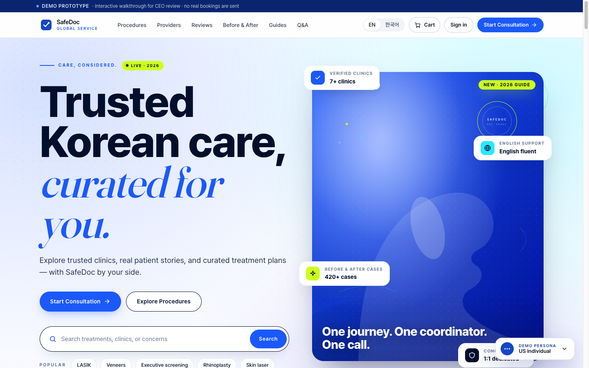
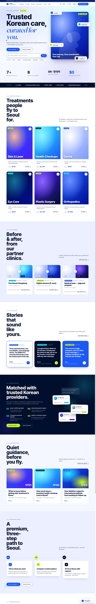
hp_hero_title_v2: "Trusted Korean care, curated for you. / 신뢰할 수 있는 한국 의료, 당신을 위한 큐레이션." + 리드 hp_hero_lede. 가운데 검색 입력(hp_search_placeholder_v2 "Search treatments, clinics, or concerns") + 검색 버튼. 데스크톱 우측에는 떠다니는 신뢰 배지 4종(hp_badge_verified "Verified clinics" / hp_badge_english "English support" / hp_badge_ba "Before & after cases" / hp_badge_concierge "Concierge care").prefers-reduced-motion 시 정지.#beforeafter (sd-cloud) — 동의 기반 케이스 그리드 + 회복 기간 라벨 + REVIEW_DISCLAIMER_DEFAULT 양 언어 디스클레이머. 신원 차단(눈가림·모자이크).#reviews (sd-paper) — 미국 환자 후기 카드(가명 표시) + "더 보기" 진입.#providers (sd-navy) — KSAPS · ISAPS · KDA · JCI 자격 검증 정책 설명. 의료진 통계는 한국 의료광고 사전심의 통과 후 노출.#guides (sd-mist) — Eyebrow "The reading room / 리딩 룸" + 타이틀 hp_guides_title_v2 "Quiet guidance, before you fly. / 방한 전, 차분히 읽어 보세요." 가이드 카드 3–4종.#how (sd-cloud) — 3-step (Discover → Request → Travel, 한국어 1·2·3단계), 점선 커넥터, "단 세 단계, 전담 코디네이터, 완전한 가시성" 카피.#faq (sd-paper) — 국제 환자 핵심 질의 <details> 아코디언, 열림 시 보더 강조 + 아이콘 45° 회전.#enterprise — 다크 네이비 클로징 배너 + ACME Holdings 협상 할인 미리보기. CTA "For employers / 기업 전용".#simulator — Eyebrow sim_kicker "Interactive price simulator / 인터랙티브 요금 시뮬레이터" + 타이틀 sim_title "See how your price changes. / 내 요금이 어떻게 달라질까." 5개 레버 + 4단계 시나리오 슬라이더 + 라이브 영수증.v1.1 기준 랜딩은 <div class="home-sd"> 스코프 안에서 11개 섹션이 수직으로 연결된다. 헤더 메뉴(#beforeafter, #reviews, #providers, #guides, #how, #faq, #enterprise, #simulator)로 직접 점프 가능.
Browse specialties + Secondary How it works. 우측: 떠다니는 신뢰 배지 4종(JCI·영어 진료·전·후 사례·1:1 컨시어지) + 대표 가격 카드.#beforeafter (sd-cloud)#reviews (sd-paper)REVIEW_DISCLAIMER_DEFAULT(EN/KO) 하단 고정. "더 보기" 진입.#providers (sd-navy)#guides (sd-mist)#how (sd-cloud)#faq (sd-paper)<details> 아코디언. 열림 시 보더 강조 + 아이콘 45° 회전.#enterprise (sd-navy + sd-mist)For employers.#simulatortranslateY(-4px) + 보더 컬러 전환.prefers-reduced-motion 시 자동 정지.<details> 기반, 스크린리더 친화.renderSim()이 매 진입 시 초기화.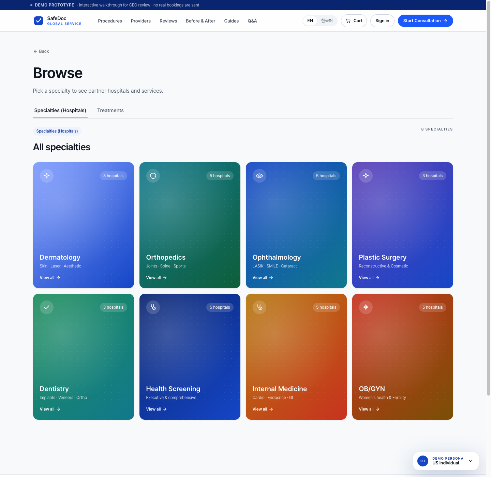
← 뒤로 미세 링크, "둘러보기" 대제목 + 1줄 서브카피.모두 보기 →.← Back 미세 링크, Browse 대제목, 1줄 서브카피.Specialties(active) · Treatments. 키보드 좌/우 이동 지원.All specialties, 우측 카운트 칩 8 specialties.View all →.palette[0] → palette[1]).translateY(-2px) + shadow-cardHover.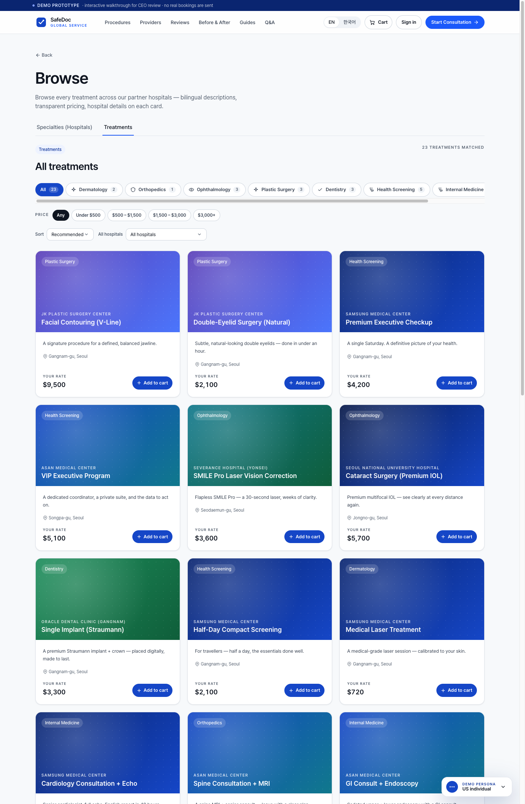
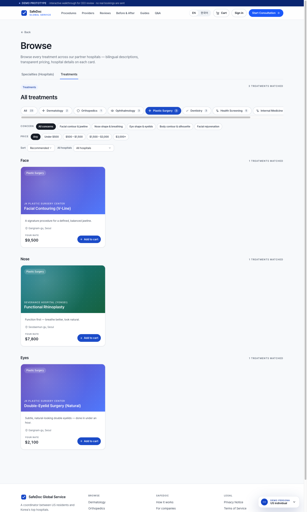
← Back 미세 링크, Browse 대제목, 1줄 서브카피(services_sub).Specialties (Hospitals)(browse_tab_specialties) ↔ Treatments(browse_tab_treatments, active). 두 탭은 라우트 그룹(#/departments/#/hospitals ↔ #/services)을 공유.All. 활성 진료과는 보더 강조. 클릭 시 ?dept={id} 적용. 모바일에서는 -mx-4 overflow-x-auto.CONCERN_ORDER[dept]가 정의된 경우(예: derm)에만 노출. 칩 그룹 — concern_all + 진료과별 고민(concern_*).price_any · price_lt500(<$500) · price_500_1500($500–1.5K) · price_1500_3000($1.5K–3K) · price_gt3000($3K+). 라이브 카운트.sort_recommended/sort_popular/sort_price_asc/sort_price_desc/sort_duration) + Hospital select(filter_all + 병원 목록).serviceListCard. 진료과에 PROCEDURE_ORDER[dept]가 있으면(예: screen 진료과) 시술 카테고리별로 그룹 섹션(group_* 헤더)으로 분리, 없으면 플랫 그리드.empty_dept_title/empty_dept_body + Browse 진입 CTA.computePrice 라이브, 페르소나 적용).PROCEDURE_ORDER 정의된 진료과(현재 screen)는 "Diagnostic" / "Preventive" 등 카테고리로 그룹화.?dept=derm&concern=acne&price=lt500&sort=price_asc&hospital=samsung). 새로고침·딥링크 보존.empty_dept_title/empty_dept_body + 필터 리셋 안내.PROCEDURE_ORDER 진료과 — 카테고리 헤더로 그룹 분리.state.cart push + 토스트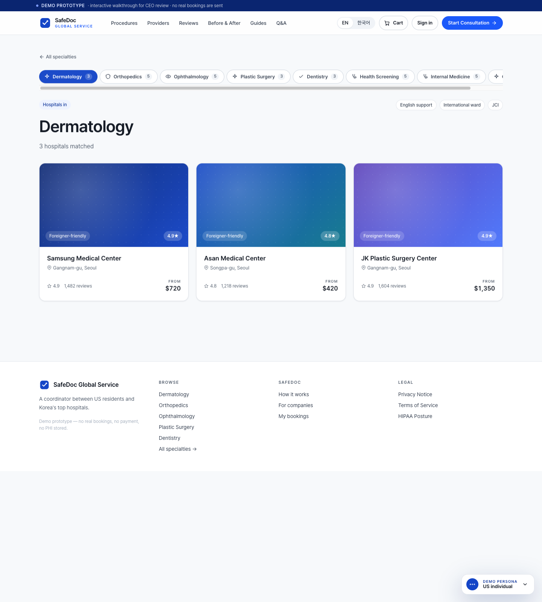
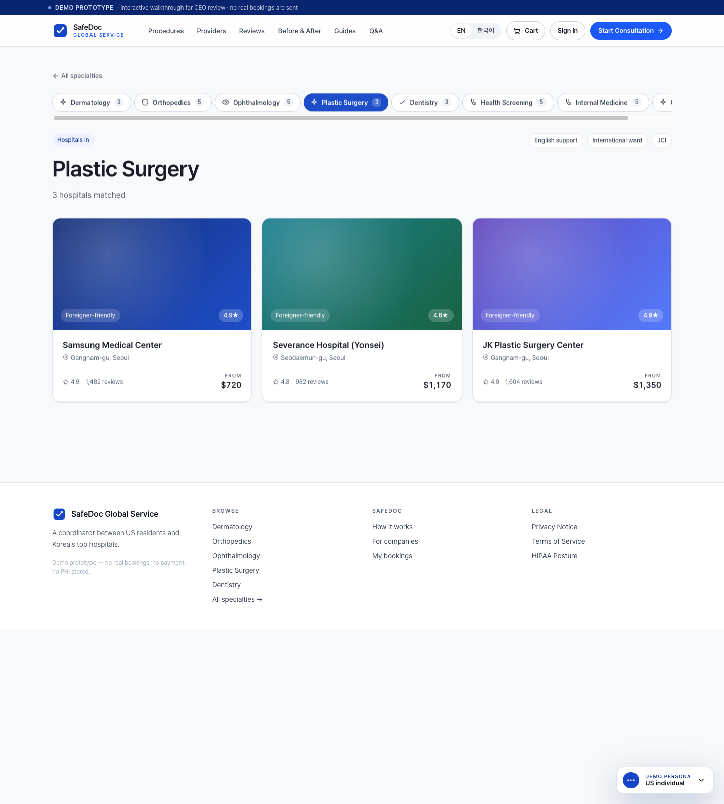
brand.600 배경으로 활성, 옆 카운트 표시.brand.600로 강조 + 아이콘.View hospital →.All specialties CTA.탭 ① Services — 기본 진입
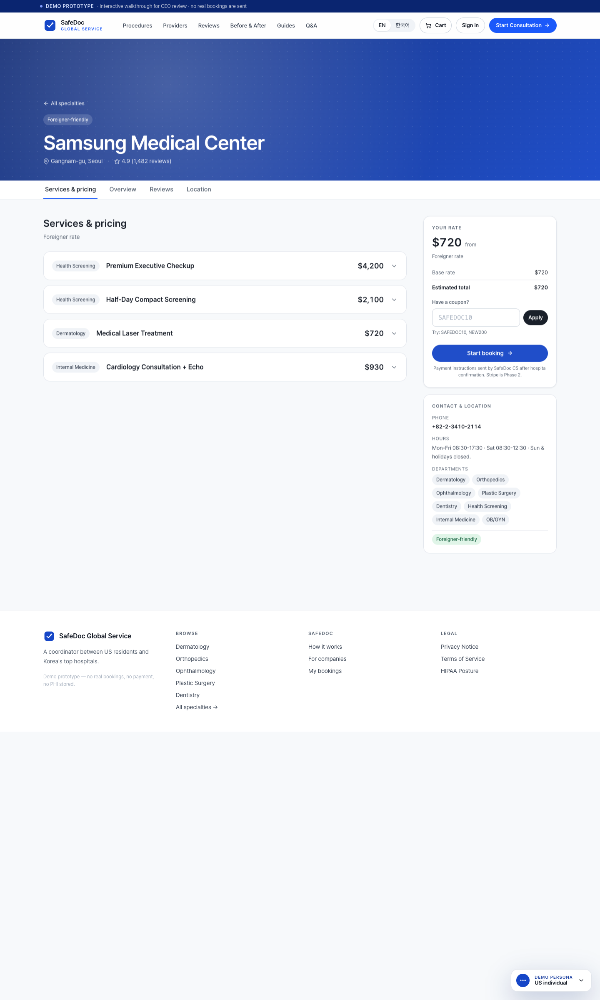
?tab=…로 deep-link 가능.상세 + 장바구니에 담기 / 담김 토글.탭 ② Overview — 병원 소개
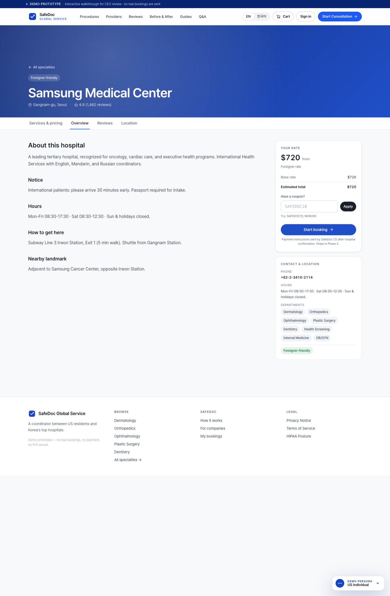
← Back + 큰 H1(EN 본문 + KO 부제), 평점 + 위치 칩. 외국인 친화 인증(kr_foreigner_friendly) 칩.tab_services(default) · tab_overview · tab_reviews · tab_location. URL ?tab=… deep-link. role="tablist", 키보드 ←/→ 이동.<details> 아코디언 시술 행. summary에 시술명 + 가격 라인업(base_price · 티어 · enterprise_applied 줄긋기 + 적용가). open 시 service_desc "포함 사항" + 2개 CTA: svc_view_detail(시술 상세) + svc_add_cart/svc_in_cart 토글.about 섹션 + KR DB 필드(kr_notice·kr_hours·kr_transport·kr_landmark 등) 한국어 원문 보존.tab_reviews_stub "Reviews appear after hospital confirmation. / 리뷰는 병원 확정 후 표시됩니다." placeholder 카드.tab_location_stub "Map view will be wired to Naver & Google Maps in production." placeholder.your_rate 적용가(from_price) → base_price·enterprise_applied·coupon_applied 라인 → estimated_total + Primary cta_book. 충돌 시 라디오 인서트.coupon_prompt "Have a coupon?" 입력창 + coupon_apply/coupon_remove 버튼 + 힌트 coupon_try "Try: SAFEDOC10, NEW200". 적용 시 토스트 toast_coupon_ok, 잘못된 코드 시 toast_coupon_bad.kr_contact_info — kr_address·kr_phone·kr_departments 한국어 원문.<details>) — summary에 가격 라인업 즉시 노출 (페르소나/쿠폰/충돌 반영). open 시 설명 + 액션 2개.computePrice(service, user, couponCode, conflictChoice) 라이브 계산. 페르소나 전환 시 즉시 갱신.state.couponCode 영속(localStorage). 같은 카드의 가격에 즉시 반영.kr_*) 그대로 보존, 영문/국문 라벨만 i18n.?tab=services 등 URL 영속, 새로고침 시 동일 탭 복원.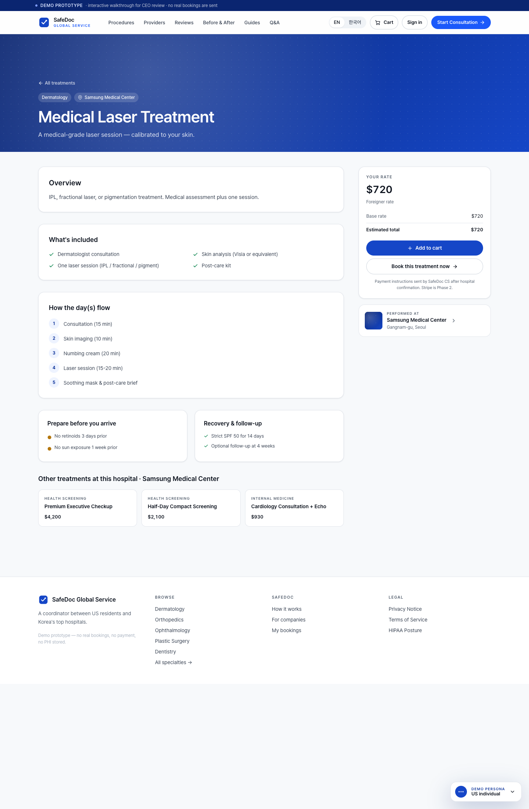
← Back to services + 진료과 칩 + 병원 칩(클릭 시 #/hospital/:id). H1 시술명(EN) + KO 부제. (선택) tagline 1줄.svc_overview)desc 필드 한국어 원문 보존.svc_included, 조건부)included[] 배열). 비어있으면 섹션 자체 숨김.svc_process, 조건부)process[]). 단계명 + 1줄 설명.svc_prep "Before" + svc_aftercare "After" 2-컬럼. prep[] 빈 배열 시 svc_no_prep "No special prep required" 안내.svc_other_at_hospital)svc_at_hospital {병원명}" 부제. 가격 즉시 비교.your_rate 적용가(big) → base_price·티어·enterprise_applied 라인업 → estimated_total. CTA 2종: svc_in_cart/svc_add_cart 토글 + svc_book_now "Book now" → #/book/{hospitalId}/{serviceId}. 하단 payment_note.svc_at_hospital 보기" CTA → #/hospital/:id.computePrice 라이브, 페르소나·쿠폰 즉시 반영. 충돌 시 라디오는 미노출 (book/checkout 단계에서 결정).svc_in_cart "In cart"로 라벨 변경 + disabled.desc/included[]/process[]/prep[]/aftercare[] 필드. 빈 배열·null 시 섹션 자동 숨김.svc_add_cart "Add to cart" / svc_in_cart "In cart"state.cart push + 토스트svc_book_now "Book now"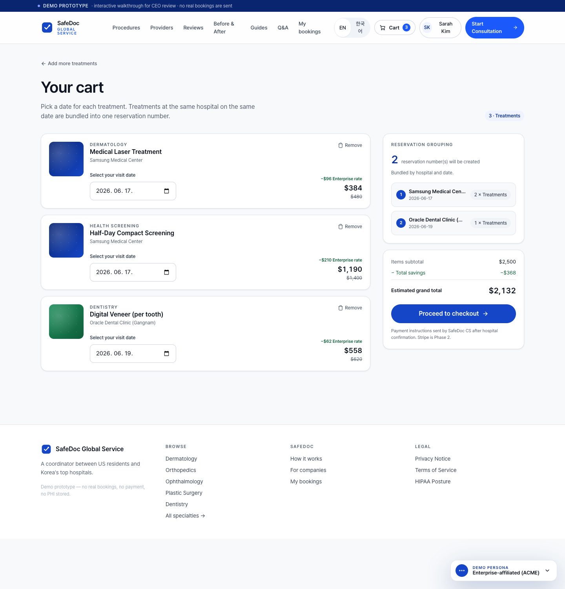
← Add more treatments 백 링크 (→ #/services) + H1 "Your cart" + 1줄 부제 "Pick a date for each treatment. Treatments at the same hospital on the same date are bundled into one reservation number." 우상단 카운트 칩 "3 · Treatments".1 Samsung Medical Cen… · 2026-06-17 · "2 × Treatments", 2 Oracle Dental Clinic · 2026-06-19 · "1 × Treatments".Proceed to checkout → (모든 라인 visitDate 입력됨 → 활성). 하단 안내문 "Payment instructions sent by SafeDoc CS after hospital confirmation. Stripe is Phase 2."← Continue browsing 미세 링크 (cart_continue) → #/services. 타이틀 cart_title + 1줄 서브카피 cart_sub, 우상단 항목 수 칩 {n} · Services.#/service/:id) + 병원명 + 우상단 ${'$'}{trash} Remove. 하단 행: 방문 날짜 <input type="date" min={tomorrow}> + 우측 가격 (티어 적용가 + 기업 할인 메모 + 줄긋기 원가).(병원, 날짜) 페어 1그룹), 그룹 목록(1·2·3 번호 칩 + 병원명 + 날짜/미입력 시 경고 톤).cart_subtotal) → 절약 금액(cart_savings, 녹색) → 굵은 라인 위 예상 총액(cart_grand_total). 모든 라인 날짜 입력 시에만 Primary CTA cart_proceed 활성, 미입력 시 "날짜를 먼저 선택하세요" disabled 상태. 하단 payment_note 안내 1줄.cart_empty_t/cart_empty_s + Primary CTA cart_browse → #/services.computePrice(service, user, couponCode, conflictChoice)로 라이브 계산. 페르소나 전환 시 즉시 갱신.cartGroups()가 (hospitalId, visitDate) 페어로 묶음. 데모 핵심 메시지: "같은 병원 같은 날짜 = 1개 예약번호"를 시각적으로 사용자에게 명시.min={today+1} (내일부터 선택 가능). 그룹 미입력 행은 warning 톤 카드 + 메시지 cart_pick_date_first.cart_empty_t/cart_empty_s + cart_browse CTA.cart_proceed)cart_continue)cart_remove)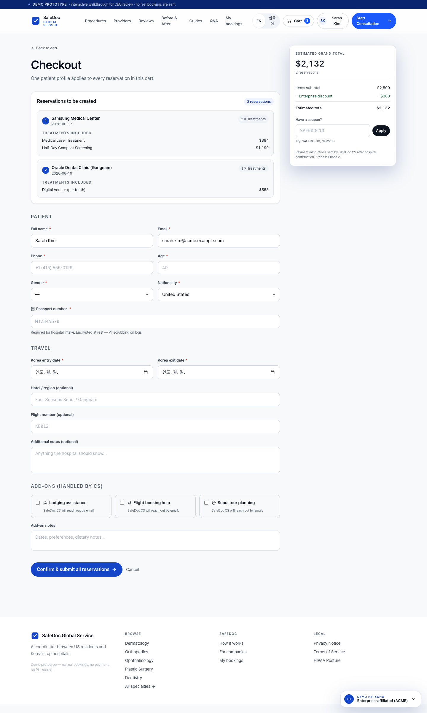
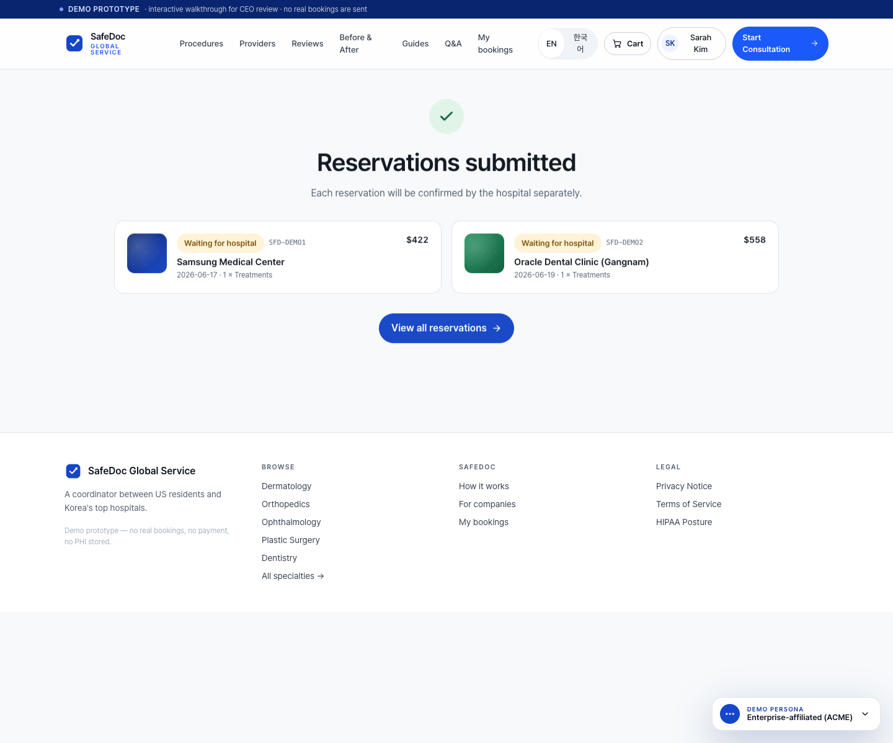
← Back to cart 백 링크 + H1 "Checkout" + 1줄 부제 "One patient profile applies to every reservation in this cart."1 Samsung Medical Center · 2026-06-17 · 2 treatments (Medical Laser Treatment $384, Half-Day Compact Screening $1,190) / 2 Oracle Dental Clinic · 2026-06-19 · 1 treatment (Digital Veneer (per tooth) $558). 우상단 카운트 칩 "2 reservations".Confirm & submit all reservations + Secondary Cancel → #/cart. 제출 시 그룹별 booking 생성 후 #/checkout-done?ids=…로 이동.#/signin?next=#/checkout 리다이렉트. 카트 비었거나 일부 라인에 visitDate 없으면 #/cart로 즉시 되돌려보낸다.checkout_back "Back to cart" + H1 checkout_title + 1줄 checkout_sub.checkout_summary_t "예약 그룹 요약" + checkout_one_reservation/checkout_n_reservations 카운트. cartGroups()가 반환한 (병원, 날짜) 페어별 그룹 카드: 병원명 + visitDate + checkout_treatments_in 시술 목록 + 그룹별 합계.section_patient, 1회 입력 → 모든 예약에 공통 적용)field_name(자동 채움) · field_email(자동, readonly/disabled) · field_phone · field_age(18–120) · field_gender(F/M/O) · field_nationality(US/KR/CA/UK/Other) · field_passport(mono uppercase, hint passport_hint).section_travel)field_entry(한국 입국일) · field_exit(한국 출국일). 선택: field_hotel·field_flight·field_notes. visitDate는 카트 단계에서 이미 라인별로 입력되어 본 폼에 없음.section_addons)addon_lodging/addon_flight/addon_tour) + addon_notes textarea. 각 카드 hint addon_cs_hint.checkout_submit "Submit checkout" + Secondary cta_cancel "Cancel" → #/cart.cart_grand_total 큰 숫자 → base_price 소계 → enterprise_applied · coupon_applied 할인 → estimated_total. 충돌 시 conflict_title/conflict_sub warning 카드 + 라디오(pick_enterprise/pick_coupon). 쿠폰 입력창(coupon_prompt + coupon_try 힌트). 하단 payment_note.cartGroups() = (hospitalId, visitDate) 페어 묶음. 그룹 1개 = 예약 ID 1개로 생성될 예정임을 명시.state.bookings[id])에 동일 정보를 자동 복사.err_passport 6–12 알파뉴메릭, err_dates 출국>입국). 미통과 시 인라인 오류.state.couponCode 즉시 반영, 합계 라이브 갱신.booking 객체 생성 → state.cart 비움 → #/checkout-done?ids={id1,id2,…}로 이동.#/cart 리다이렉트.#/checkout-done로 이동.checkout_submit "Submit checkout"cta_cancel "Cancel" or checkout_backcheckout_done_t + p checkout_done_s.ids 파라미터로 받은 booking ID마다 카드: 병원 photo-tile + status_waiting 황색 칩 + 예약 ID(mono) + 병원명 + visitDate + 시술 개수 칩(nav_services) + 총 가격.checkout_done_view_all "View all bookings" → #/bookings.?ids=SFD-A1B2C,SFD-D3E4F CSV 파싱 후 state.bookings[id] 조회. 누락된 ID는 카드 자체를 미렌더.status_waiting. P12 진입 후 사용자가 simulate 누르면 P13에서 confirmed로 보이게 됨.checkout_done_view_all "View all bookings"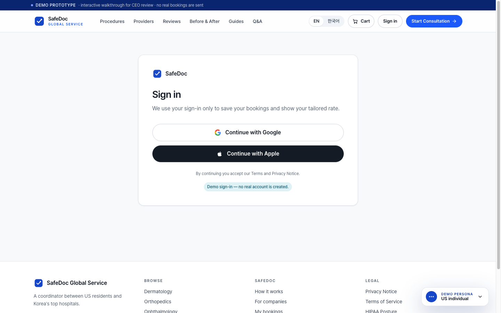
Continue with Google · Continue with Apple (데모용 800ms 페이크 지연).profile.country 미존재면 P10 온보딩으로, 존재하면 :next로 복귀.Continue with Google · Continue with Apple 두 개. 데모용으로만 작동(800ms 페이크 지연).brand.500, 버튼 높이 44px(터치 타겟).profile.country 미존재면 #/onboarding?next=:original로, 존재하면 :next로.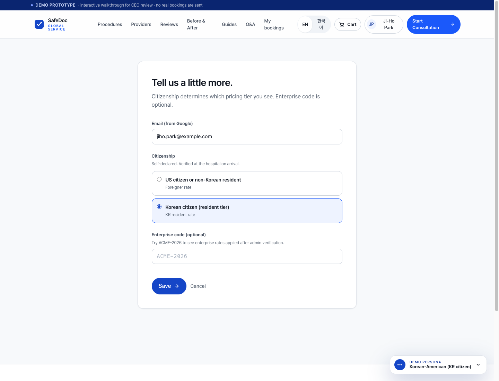
한국 시민권자 · 비-한국 시민권자(외국인). 미선택 상태에서 캡처되어 둘 다 비활성.관리자 승인 시뮬 버튼으로 verifying→verified 시연 가능.저장 → CTA + Secondary 취소.한국 시민권자 · 비-한국 시민권자(외국인). 선택 미루기 불가(필수).Verify. 입력 시 페르소나 패널의 Simulate admin verification로 verified 시연.Continue — Primary, 우하단 고정.idle → verifying → verified / failed. 실패 시 인라인 카피로 안내.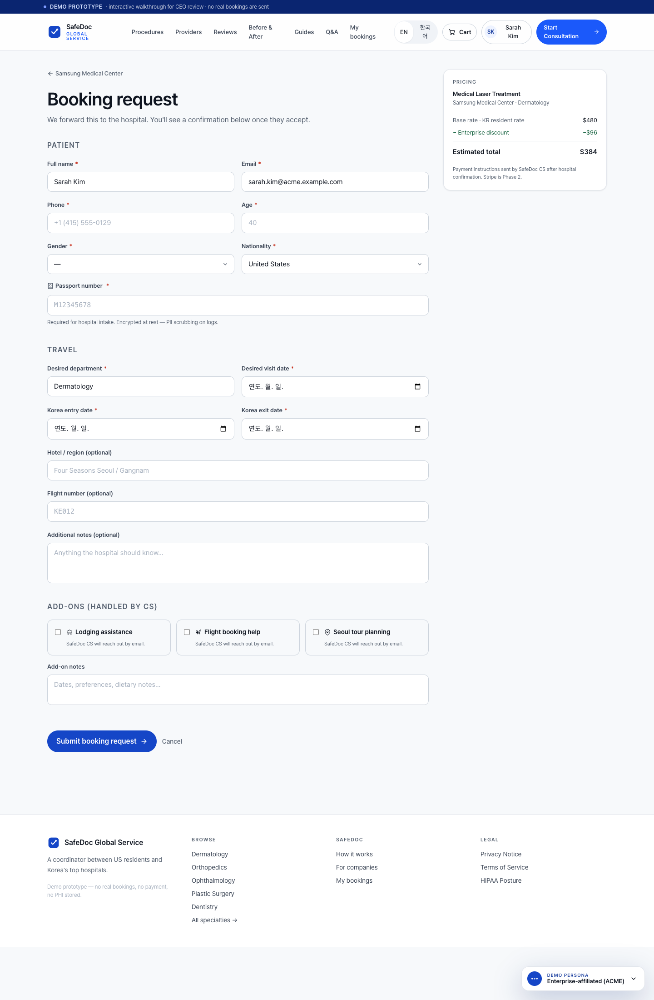
← Samsung Medical Center 백 링크 + H1 "Booking request" + 부제 "We forward this to the hospital. You'll see a confirmation below once they accept."Submit booking request → + Secondary Cancel 텍스트 링크.← :hospital_name 백 링크 → #/hospital/:id. 타이틀 booking_title "예약 요청" + 1줄 서브카피 booking_sub.section_patient)field_name, OAuth 프로필 자동 채움) · 이메일(field_email) · 전화(field_phone) · 연령(field_age, number 18–120) · 성별(field_gender, F/M/O) · 국적(field_nationality, select) · 여권 번호(field_passport, mono uppercase, hint = passport_hint "Encrypted at rest — PII scrubbing on logs"). 생년월일 수집 안 함.section_travel)field_dept, 진료과 자동 채움 readonly) · 희망 방문일(field_date, date) · 한국 입국일(field_entry) · 한국 출국일(field_exit). 선택: 호텔/지역(field_hotel, e.g. "Four Seasons Seoul / Gangnam") · 항공편 번호(field_flight, e.g. "KE012") · 추가 메모(field_notes, textarea, placeholder notes_placeholder).section_addons)addon_lodging, hotel 아이콘) · 항공(addon_flight, plane 아이콘) · 투어(addon_tour, map-pin 아이콘). 각 카드 체크 시 brand-50 배경 + brand-500 보더. 하단 자유 메모(addon_notes, textarea, placeholder addon_notes_placeholder) — CS가 별도 협의(addon_cs_hint).cta_submit "예약 요청 제출 →", Secondary cta_cancel "취소" 텍스트 링크.base_price + 티어 칩) → 기업 할인 라인(enterprise_applied, 녹색) → 쿠폰 할인 라인(coupon_applied, 녹색, 쿠폰 코드 노출) → 라인 위 굵은 estimated_total. 충돌 발생 시 라디오 카드 인서트, 하단 payment_note 안내.쿠폰 적용 시점 컨텍스트: 데모에서는 쿠폰은 카트/체크아웃 단계의 다른 위치에서 적용되며 state.couponCode로 보존된다. 본 폼은 쿠폰을 직접 입력하지 않고, 적용된 쿠폰이 비-스택이면 라디오로 양자 택일을 강제한다.
computePrice(service, user, couponCode, conflictChoice)
= base[tier]
× (1 − enterprise_discount?)
× (1 − coupon_discount?)
↑ 비-스택 쿠폰과 enterprise 동시 가능 시 라디오 강제
· SAFEDOC10 : 10% off, 기업 할인과 스택 가능
· NEW200 : $200 off, 비-스택 → 우측 sticky에 라디오 카드 노출
conflict_title / conflict_sub) — 우측 sticky 안 warning 톤 카드. 라디오 2개: pick_enterprise "기업 할인 적용" / pick_coupon "쿠폰 적용". chosen 값이 즉시 computePrice에 반영.err_passport), 출국일 > 입국일(err_dates). 미통과 시 인라인 오류.#/signin?next=#/book/:hospital/:service로 리다이렉트 후 콜백 복귀.상태 ① CONFIRMED — 병원 확정 완료
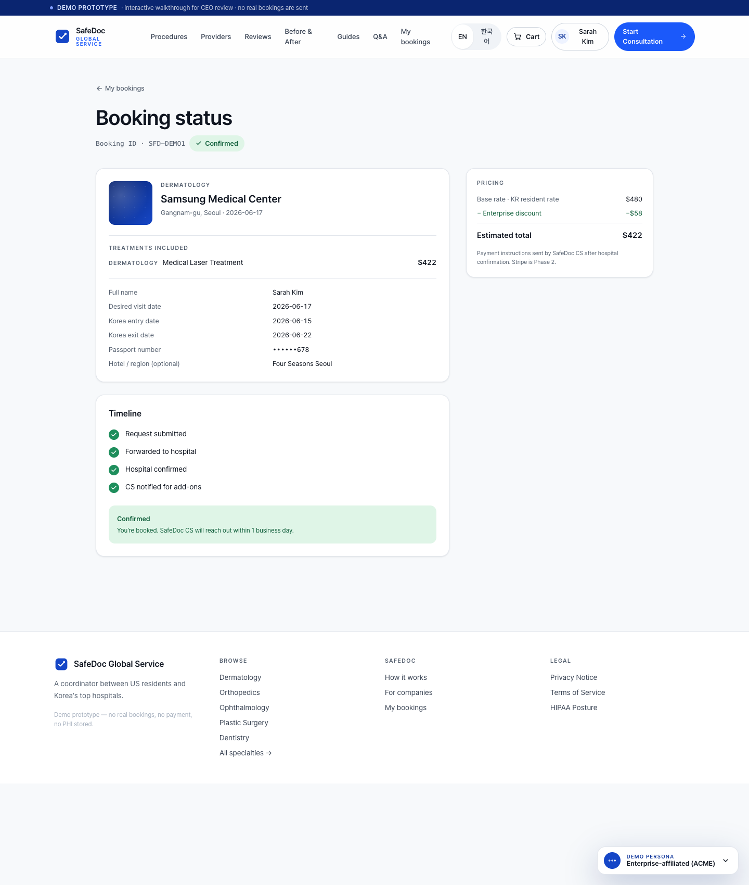
← My bookings 백 링크 + H1 "Booking status". 하위 메타 행: Booking ID · SFD-DEMO01 (mono) + 녹색 칩 "Confirmed".상태 ② WAITING — 병원 확정 대기 + Simulate 버튼 노출
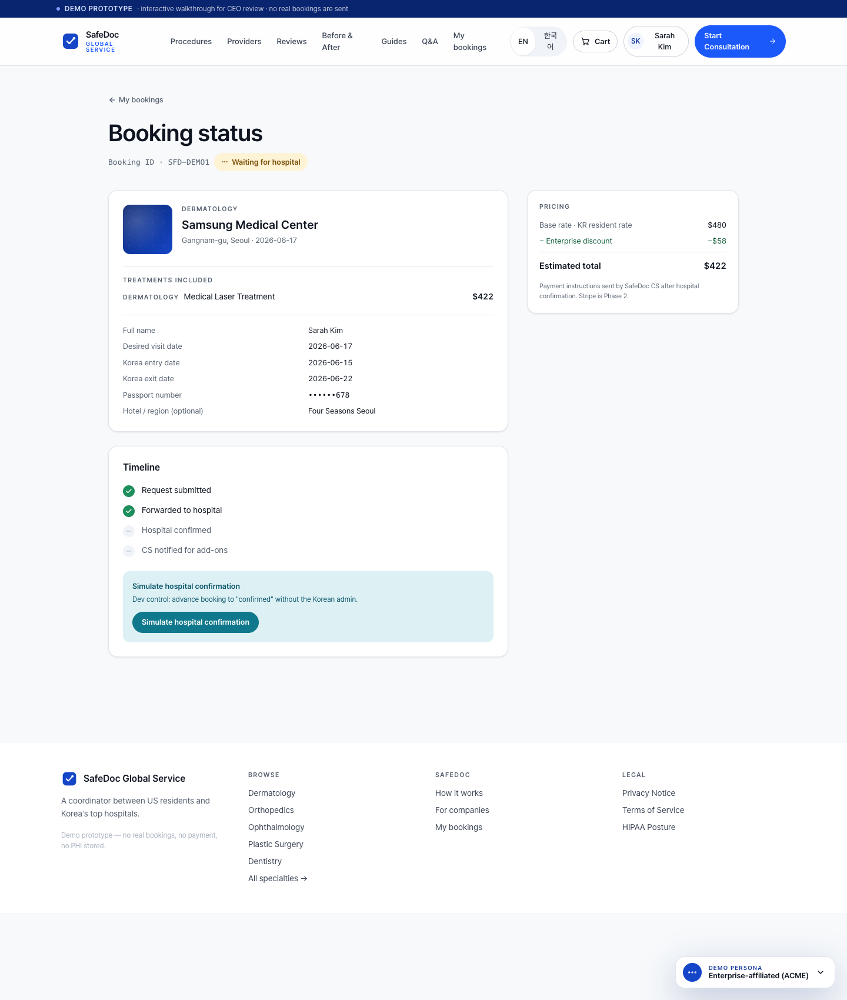
NEXT_PUBLIC_DEMO_MODE 가드로 본 카드가 렌더되지 않는다.← nav_bookings 백 링크 + H1 status_title "예약 진행 상태". 우측 정렬: booking_number 라벨 + 예약 ID(mono, 예 SFD-A1B2C) + 상태 칩(status_waiting 황색 / status_confirmed 녹색) + 시술 개수 칩(nav_services).checkout_treatments_in) + DL: field_name · field_date(희망 방문일) · field_entry/field_exit(한국 입출국일) · field_passport(마스킹) · field_hotel(입력된 경우).timeline_title 헤더 + 4-step: ① timeline_submitted ✓ → ② timeline_forwarded ✓ → ③ timeline_confirmed(status=confirmed 시 ✓) → ④ timeline_cs_notified(부가서비스 체크된 예약만 노출). 미완료 단계는 회색 펜딩.cta_simulate "Simulate hospital confirmation" 버튼 + simulate_hint ("한국 관리자 없이 예약을 '확정' 상태로 진행하는 개발용 컨트롤"). status=confirmed → success 박스 + confirmed_summary "예약이 확정되었습니다. CS가 1영업일 내에 연락드립니다."section_pricing 헤더 + base_price·티어(tier_resident/tier_foreigner) → enterprise_applied(녹색) → coupon_applied(녹색, 쿠폰 코드 노출) → estimated_total. 하단 payment_note 안내.simulate-confirm. 클릭 시 bookings[id].status='confirmed' + toast_hospital_ok 토스트 + 즉시 re-render. 프로덕션 빌드에서 NEXT_PUBLIC_DEMO_MODE 가드로 제거.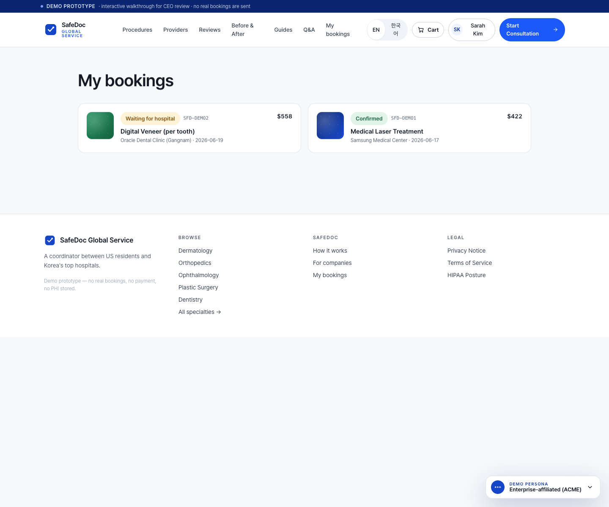
SFD-D3E4F — 병원 확정 대기 칩, 디지털 라미네이트(오라클치과), 2026-07-03, $558.SFD-A1B2C — 확정됨 칩, 의료용 레이저 시술(삼성서울병원), 2026-06-17, $422.My bookings + 총 건수 + 우측 새 예약 CTA.brand.500 + 2px offset, 터치 타겟 ≥ 44 × 44 px.role="status", 상태 전이 aria-live="polite".label 명시.| 요소 | EN | KO (:lang(ko)) |
|---|---|---|
| 본문 단락 | 1.55 | 1.7 |
| 긴 절차 리스트 | 1.6 | 1.75 |
| 제목 H1/H2 | 1.15 / 1.25 | 1.2 / 1.3 |
| letter-spacing | -0.01em | 0 |
aria-label="Remove <시술명>"으로 명시.prefers-reduced-motion: reduce 시 페이지 전환·호버 트랜지션·photo-tile 호버 모션 제거.요구사항정의서 §4(기능 요구사항)의 FR-IDs를 페이지 단위로 다시 정렬한다.
| 화면 | 화면명 | 관련 FR-IDs |
|---|---|---|
| P01 | Landing | FR-LND-01 ~ 06 (히어로, 추천 시술, 엔터프라이즈 콜아웃) |
| P02 | Departments | FR-BRW-01 ~ 03 (8개 진료과, 카운트, 탭) |
| P03 | Treatments Catalog | FR-BRW-04 ~ 09 (필터, 정렬, 빈 상태) |
| P04 | Hospitals | FR-HSP-01 ~ 04 (진료과 칩, 카드 가격 미리보기) |
| P05 | Hospital Detail | FR-HSP-05 ~ 12 (4 탭, 가격박스, In-cart 토글) |
| P06 | Service Detail | FR-SVC-01 ~ 07 (절차, 가격, 대안) |
| P07 | Cart | FR-CRT-01 ~ 05 (병원 그루핑, 충돌 안내) |
| P08 | Checkout | FR-CHK-01 ~ 08 (스텝퍼, 병원별 분리, 일괄 제출) |
| P09 | Sign-in | FR-AUT-01 ~ 03 (OAuth 모킹, next 보존) |
| P10 | Onboarding | FR-AUT-04 ~ 08 (시민권, 기업 코드, 검증) |
| P11 | Booking Form | FR-BOK-01 ~ 09 (실시간 가격, 쿠폰 충돌) |
| P12 | Booking Status | FR-BOK-10 ~ 13 (타임라인, 시뮬 전이) |
| P13 | My Bookings | FR-BOK-14 ~ 15 (목록, 빈 상태) |
FR-ID 본문은 SafeDoc-요구사항정의서-v1.0.pdf §4 참조. 본 기획서는 화면 단위 사양을, 요구사항정의서는 시스템 단위 행위를 정의한다(상호 보완).